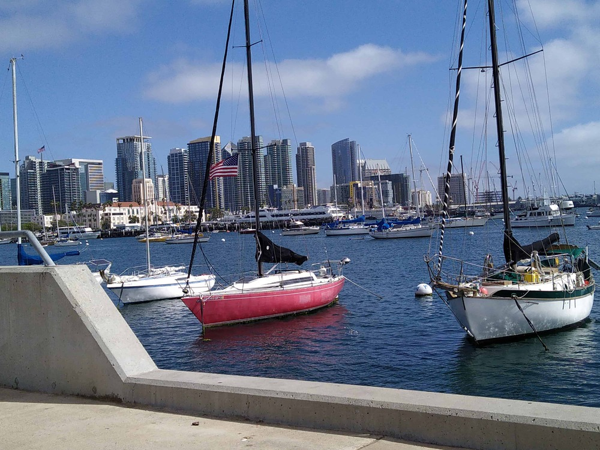
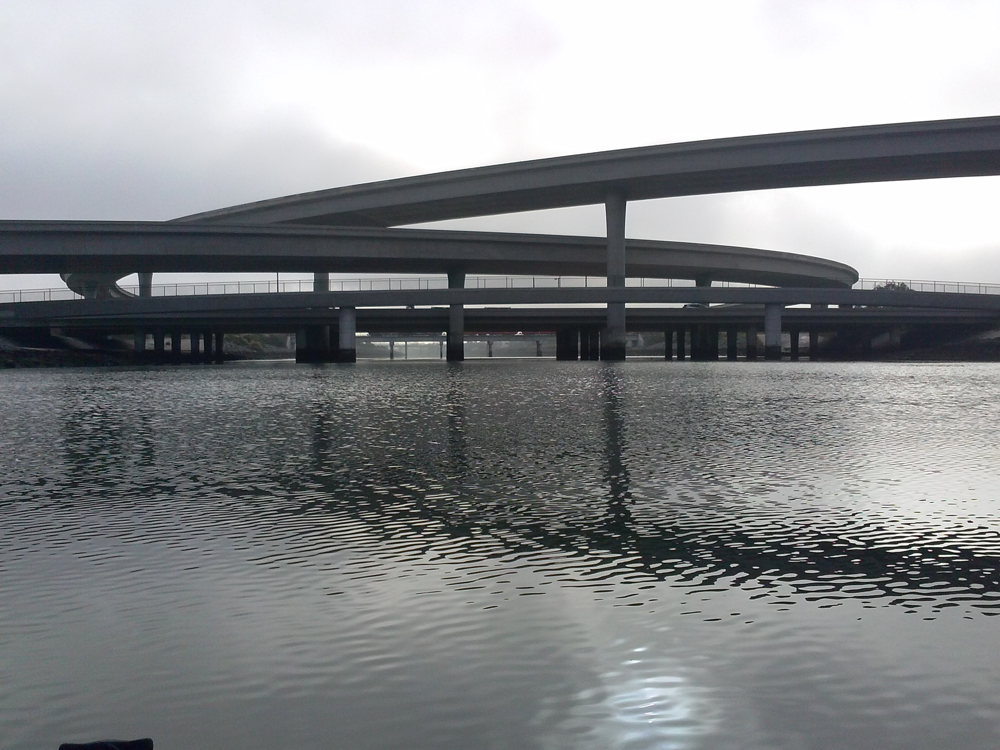
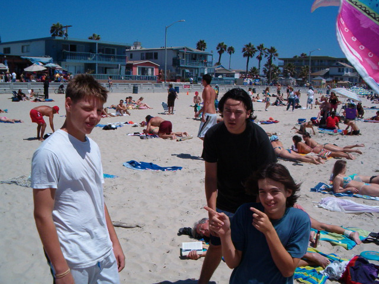

Enjoy San Diego
California's second largest city and the United States' eighth largest, San Diego has a citywide population of nearly 1.3 million residents and a countywide population of more than 3 million residents. It's bordered by Riverside and Orange counties to the north, Imperial County to the east, the Pacific Ocean to the west, and Mexico to the south.
San Diego has a long association with the United States Navy and Marines, being on the edge of the Pacific Ocean. More than 360,000 jobs in San Diego County are either directly or indirectly tied to defense spending and San Diego has emerged as a leading healthcare and biotechnology development center.
The city of San Diego is known for sailing, kayaking and jet skiing and touristing. San Diego also has extensive beaches such as iconic and hippyish Ocean Beach,then there is Mission Beach_ land of the roller skater, bicyclist and skate boarders, also Pacific Beach known for it's pubs and restaurants and then of course "The Jewel" La Jolla... plus many more.

About San Diego
I lived 10 or 12 blocks from downtown San Diego (Goldenhill neighborhood). Downtown San Diego in 1975 was a pretty neat place for a young person to hang out, definitely not a place you would take your date or visiting family member. It was dark and dingy with a lot of cool grungy bars, some underground clubs and also message parlors. Being a navy town there were lots of sailors.
The city leaders and bigwigs then decided to make a change and clean it up and moderize. 
One of the first big attractions was "Croce's jazz bar and restaurant" (Jim Croce's wife and son opened and ran it) and Downtown San Diego started to transform and grow and it is still growing. Going downtown is a very fun way to spend a day,
Beaching it!
My sons Justin(blkShrt) Cameron(fingers) and buddy Donn at Pacific Beach 2004. Located just south of Crystal Pier, Pacific Beach extends south before becoming Mission Beach. One of the busiest beach areas in San Diego and coolest.

With 17 miles of coastline and 4,600 acres around Mission Bay Park, San Diego has a lot of fun water stuff to do.. San Diego Lifeguards patrol the beaches from nine permanent lifeguard stations (Ocean Beach, South Mission Beach, Mission Beach, North Pacific Beach, Pacific Beach, Children’s Pool, La Jolla Cove, La Jolla Shores, Black’s Beach(bathing suit optional)) and dozens of seasonal stations during the summer.(swiped off some website and like they all have the same stuff soooo(is that plagiarism”?)) So boo me.